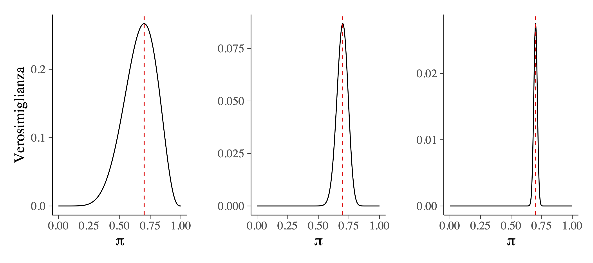

Intervallo fiduciale
Contents
Intervallo fiduciale#
La variabilità campionaria#
Consideriamo, quale esempio, l’esperimento casuale che corrisponde all’estrazione casuale di un campione di \(n\) osservazioni da una popolazione e del calcolo della media di quel campione. Dato che si immagina che l’esperimento casuale venga ripetuto infinite volte, dobbiamo immaginare l’esistenza di infiniti campioni casuali di \(n\) osservazioni. Dato che ciascuno di tali campioni è costituito da osservazioni diverse, ognuno di essi avrà una media diversa. Tale fenomeno è detto variabilità campionaria. Se usiamo il linguaggio dell’approccio frequentista diremo che la distribuzione dei tutti gli infiniti possibili valori della statistica in questione (nel caso dell’esempio, la media del campione) nell’universo dei campioni si chiama distribuzione campionaria.
Se lo psicologo usa la media del campione quale stima della media della popolazione, ovviamente commetterà un errore, dato che la statistica campionaria è sempre diversa dal parametro. Il problema dello psicologo è quello di valutare l’entità di tale errore, ovvero quello di valutare il livello di incertezza inerente alla sua stima.
Per valutare l’incertezza della stima lo psicologo fa riferimento alla variabilità campionaria. Se la deviazione standard della distribuzione campionaria della statistica è piccola, questo significa che ogni campione casuale di ampiezza \(n\) produrrà una statistica \(\bar{X}\) simile al parametro \(\mu\) della popolazione. In tali condizioni (utilizzando i dati di un singolo campione) ci sarà una piccola incertezza relativamente al valore del parametro, perché, in media, \(\bar{X}\) è simile a \(\mu\). Se invece la deviazione standard della distribuzione campionaria di \(\bar{X}\) è grande, i campioni casuali di ampiezza \(n\) produrranno, in media, una statistica \(\bar{X}\) molto lontana dal parametro \(\mu\). Utilizzando i dati di un singolo campione, in tali condizioni lo psicologo sarà molto incerto relativamente al vero valore del parametro (in quanto, in media, \(\bar{X}\) è molto diverso da \(\mu\)).
La deviazione standard della distribuzione campionaria, detta errore standard, viene dunque utilizzata per quantificare l’incertezza relativamente alla stima di un parametro. Solitamente, l’approccio frequentista quantifica l’incertezza della stima nei termini di una funzione dell’errore standard chiamata intervallo fiduciale. Lo scopo di questo capitolo è quello di introdurre la nozione di errore standard in modo tale da potere fornire un’interpretazione alla nozione di intervallo fiduciale.
L’errore standard#
Per fare un esempio, chiediamoci come sia possibile misurare la variabilità della proporzione di studenti promossi, se prendiamo in considerazione tutti i possibili appelli d’esame di Psicometria a Firenze (quelli passati, quelli presenti e anche quelli futuri). Da ciò che è stato presentato in precedenza, sappiamo che la statistica più utile per quantificare la variabilità di una variabile è la deviazione standard. Questo fatto fornisce la risposta anche alla domanda che ci siamo posti ora: in linea di principio, potremmo usare la deviazione standard per descrivere di quanto variano, in media, i valori delle proporzioni di studenti promossi in tutti i possibili appelli d’esame di Psicometria a Firenze. Un problema che dobbiamo affrontare, però, riguarda il fatto che la distribuzione di valori a cui facciamo riferimento è una distribuzione di valori virtuali, non è un insieme di dati che abbiamo osservato. Per calcolare la deviazione standard, dunque, dobbiamo procedere in modo diverso da quanto abbiamo fatto in precedenza. Iniziamo con un po’ di terminologia.
Definizione
Si dice errore standard la deviazione standard dei valori una statistica campionaria nell’universo dei campioni.
L’errore standard è molto importante perché descrive l’accuratezza della nostra stima. Se l’errore standard è piccolo questo ci dice che, se osserviamo un campione diverso da quello corrente, allora ci aspettiamo che la statistica in esame abbia un valore simile a quello corrente. Un grande errore standard, invece, ci dice che non dobbiamo assegnare troppa fiducia alla stima ottenuta nel campione a disposizione perché, in un altro campione, si otterrà una stima molto diversa, e, in media, i valori ottenuti in campioni diversi saranno lontani dal vero valore del parametro sconosciuto (ovvero, nell’esempio considerato, dalla media di tutte le proporzioni che si possono ottenere).
Il calcolo dell’errore standard è solitamente lasciato ad un software. Ma come si arriva ad una quantificazione dell’errore standard? Forniamo qui solo una descrizione intuitiva della procedura che viene seguita e forniamo la seguente definizione.
Definizione
L’errore standard può essere inteso come una misura (del reciproco) della curvatura della verosimiglianza in corrispondenza della stima di massima verosimiglianza per un parametro \(\theta\).
Per capire come si traduce in pratica questa definizione, esaminiamo la figura seguente. Nel pannello di sinistra è riprodotta la funzione di verosimiglianza nel caso di 7 successi in 10 prove Bernoulliane. Nel pannello centrale è riportata la verosimiglianza per 70 successi in 100 prove e nel pannello di destra abbiamo la verosimiglianza nel caso di 700 successi in 1000 prove.

Sinistra: funzione di verosimiglianza nel caso di 7 successi in 10 prove Bernoulliane; centro: funzione di verosimiglianza nel caso di 70 successi in 100 prove; destra: funzione di verosimiglianza nel caso di 700 successi in 1000 prove.
Quello che la figura ci dice è che, al crescere del numero di prove, diminuisce la nostra incertezza relativamente al valore del parametro \(\pi\) (probabilità di successo, ovvero, la media di tutte le proporzioni campionarie). Nel caso di un piccolo numero di prove, la verosimiglianza ha una piccola curvatura e ci fornisce una modesta quantità di informazione concernente il parametro non osservabile \(\pi\) – in altri termini, la verosimiglianza definisce un intervallo piuttosto ampio di valori \(\pi\) la cui plausibilità relativa è piuttosto grande. Con un grande numero di prove, invece, la verosimiglianza ha un picco molto più marcato che associa livelli relativamente alti di plausibilità ad un intervallo molto più piccolo di valori \(\pi\). In altre parole, maggiore è la curvatura della verosimiglianza, maggiore è la quantità di informazione che il campione fornisce rispetto al valore del parametro sconosciuto che vogliamo stimare.
In termini formali, la curvatura è la derivata seconda di una funzione e, appunto, calcolando la derivata seconda della funzione di verosimiglianza possiamo trovare l’errore standard di una statistica. Nel caso presente, l’errore standard della proporzione campionaria è
dove \(p\) è la proporzione campionaria e \(n\) è il numero di osservazioni. Questa quantità si interpreta come qualunque deviazione standard: nello specifico, ci dice quanto varia in media la proporzione campionari se consideriamo campioni diversi. Si noti che, avendo \(n\) al denominatore, la formula riproduce l’intuizione che abbiamo descritto mediante la @fig-like-se: quando \(n\) è grande l’errore standard è piccolo e, viceversa, quando \(n\) è piccolo l’errore standard è grande. In altri termini, quando l’errore standard di una stima è piccolo, possiamo attribuire un grande livello di fiducia al valore della stima del parametro. Invece, un grande errore standard ci suggerisce ad essere cauti in qualunque inferenza che potremmo trarre dalla stima che abbiamo ottenuto.
Che cos’è l’intervallo fiduciale?#
L’approccio frequentista non si limita al calcolo dell’errore standard ma affronta il problema di quantificare il grado di incertezza associato alle stime campionarie utilizzando un altro concetto, ovvero la nozione di intervallo di fiducia. Vale la pena di sottolineare che il principale significato del termine inglese confidence non è confidenza bensì fiducia. L’intervallo di fiducia è una semplice trasformazione dell’errore standard e tale nozione può essere chiarita nel modo seguente.
La stima \(\hat{\theta}\) di un parametro \(\theta\) si determina esaminando i dati forniti da un campione casuale. Sappiamo che il valore empirico \(\hat{\theta}\) non coincide mai con il vero valore del parametro (dato che il campione è diverso dalla popolazione). Conoscendo la distribuzione di \(\hat{\theta}\) diventa però possibile valutare l’errore commesso e definire l’intervallo \([\theta_{min} \leq \hat{\theta} \leq \theta_{max}]\) che, a lungo termine, comprende il valore del parametro incognito \(\theta\) con una probabilità \(\gamma \in [0, 1]\) prossima ad 1. Questo intervallo si chiama intervallo fiduciale.
Definizione
Si dice intervallo fiduciale l’intervallo \([\theta_{min}, \theta_{max}]\) tale che
dove \(\Theta\) indica l’insieme dei valori possibili del parametro \(\theta\).
Gli estremi dell’intervallo di fiducia sono chiamati limiti fiduciari e la probabilità \(\gamma\) è chiamata livello fiduciario; espressa in percentuale, essa esprime il livello di significatività della stima effettuata.
Come si calcola l’intervallo fiduciale?#
In alcuni casi, la distribuzione delle statistiche campionarie approssima la Normale e, in tali casi, l’intervallo fiduciale al 95% è dato da
ovvero, dalla stima del parametro \(\pm\) 1.96 volte l’errore standard.
Conoscendo l’errore standard, è dunque molto semplice calcolare l’intervallo fiduciale. Meno semplice, invece, è interpretare l’intervallo fiduciale nel modo corretto. Per capire quale sia l’interpretazione corretta dell’intervallo fiduciale, iniziamo a definire il concetto di livello di copertura.
Il livello di copertura#
Si indica con \(1-\alpha\) il livello di copertura fornito dall’intervallo fiduciale. Il termine probabilità di copertura si riferisce alla probabilità che la procedura per la costruzione degli intervalli di fiducia produca un intervallo che contiene (o copre) il valore reale del parametro di interesse. Esiste infatti sempre una probabilità pari ad \(\alpha\) che i dati campionari producano un intervallo che non contiene il valore reale del parametro di interesse.
Ricordiamo che l’approccio frequentista interpreta la probabilità di un evento come la proporzione di volte in cui tale evento si verifica avendo osservato molte ripetizioni indipendenti di un esperimento casuale. Nel caso presente, l’evento in questione è la risposta alla domanda “l’intervallo fiduciale contiene il valore del parametro?” mentre l’esperimento casuale corrisponde al calcolo dell’intervallo fiduciale per la statistica in question in un campione casuale di ampiezza \(n\). L’interpretazione frequentista della nozione di livello di copertura può essere chiarita mediante la seguente simulazione.
Prendiamo in considerazione la distribuzione dell’altezza degli adulti maschi nella popolazione. Sappiamo che l’altezza degli individui segue la distribuzione normale. Sappiamo inoltre che, per esempio, l’altezza media di un italiano adulto maschio è di \(175\) cm, con una varianza di \(49\) cm\(^2\). Utilizziamo queste informazioni per realizzare la seguente simulazione in R. Nella simulazione prevediamo 100 ripetizioni dell’esperimento casuale che consiste nell’estrazione di un campione di ampiezza \(n = 20\) dalla popolazione distribuita come \(\mathcal{N}(175, 7)\). Per ciascun campione casuale così trovato utilizzeremo poi la funzione t.test() per calcolare l’intervallo fiduciale al 95%. Salveremo quindi nella matrice sampling_distribution il limite inferiore e il limite superiore dell’intervallo fiduciale trovato in ciascuno dei 100 campioni.
import numpy as np
import scipy.stats as stats
def CI_coverage(alpha, n, n_samples):
''' creates n_samples samples of size n
creates an 1-alpha confidence interval for each
computes the fraction of those that contain mu '''
# get samples
samples = np.stack([np.random.normal(loc=mu, scale=sigma, size=n) for i in range(n_samples)])
# summary stats
xbar = samples.mean(axis=1)
# compute CIs... note that xbar, s, CI_low, CI_high are arrays size n_samples
t = stats.t.ppf(1 - alpha/2, n-1)
interval_width = t * samples.std(axis=1, ddof=1) / np.sqrt(n)
CI_low = samples.mean(axis=1) - interval_width
CI_high = samples.mean(axis=1) + interval_width
# coverage
coverage_p = np.sum(np.logical_and(CI_low < mu, mu < CI_high)) / samples.shape[0]
return coverage_p
Otteniamo 1000 campioni casuali di ampiezza \(n\) = 30 da una \(\mathcal{N}(175, 7)\).
mu = 175
sigma = 7
n = 30
n_samples = 1000
samples = np.stack([np.random.normal(loc=mu, scale=sigma, size=n) for i in range(n_samples)])
samples.shape
(1000, 30)
Il primo campione è il seguente.
print(*samples[1, :])
158.85280419860126 165.31647637154424 167.6343506872001 164.54006313356558 180.5097345277032 176.7316118383534 170.43566171483332 181.92837345027473 187.28949414956136 172.60828761927573 175.010919055638 168.6058130859855 187.62681634981095 174.5114325195618 164.0551200208089 174.8876280585434 166.84686537158444 174.1259853475981 182.1237159404306 171.574874855374 176.1404754548807 187.99770703458276 169.44637778424502 185.70851030254275 172.34915615641572 175.62694644090524 168.7872456708928 181.9717241641825 173.24107735633046 175.863437590279
Queste sono le medie dei primi dieci campioni di ampiezza \(n\) = 30.
xbar = samples.mean(axis=1)
print(*xbar[0:10])
177.04363208353348 174.41162287505023 177.075766980725 175.40605969556836 172.86300133369247 174.8091611786862 171.58848073721578 171.04849000877505 175.13452480119517 172.8137520760075
Troviamo il valore critico della distribuzione \(t\) di Student con (30-1) gradi di libertà.
alpha = 0.05
t = stats.t.ppf(1 - alpha/2, n-1)
t
2.045229642132703
Calcoliamo i 1000 intervalli di fiducia.
interval_width = t * samples.std(axis=1, ddof=1) / np.sqrt(n)
CI_low = samples.mean(axis=1) - interval_width
CI_high = samples.mean(axis=1) + interval_width
Troviamo il livello di copertura
coverage_p = np.sum(np.logical_and(CI_low < mu, mu < CI_high)) / samples.shape[0]
coverage_p
0.946
In conclusione, ripetendo la simulazione 1000 volte troviamo un livello di copertura (ovvero, una proporzione di intervalli fiduciali del 95% che contengono il parametro) molto prossimo al livello nominale \(1 - \alpha = 0.95\).
Interpretazione#
Studenti e ricercatori tendono ad interpretare gli intervalli fiduciali dicendo che “c’è una probabilità del 95% che la vera media della popolazione si trovi all’interno dell’intervallo fiduciale”. Questa è un’interpretazione semplice e cattura l’idea del senso comune secondo la quale una probabilità di 0.95 significa: “sono sicuro al 95%”. Sfortunatamente, l’interpretazione precedente è sbagliata. La precedente interpretazione richiede che la probabilità venga descritta in termini soggettivi e corrisponde a dire: “sono fiducioso al 95% che l’intervallo così costruito contenga la media della popolazione, perché questa è la mia opinione”. Nella vita di tutti i giorni un tale punto di vista va benissimo, ma parlare di opinioni soggettive e di fiducia è un’idea Bayesiana. Non c’è niente di male con l’idea che la nozione “probabilità del 95%” possa riferirsi a un’opinione personale. Tuttavia, gli intervalli fiduciali sono una procedura statistica di stampo frequentista, non Bayesiano. Se usiamo degli strumenti statistici frequentisti per costruire l’intervallo fiduciale non possiamo attribuire ad esso un’interpretazione Bayesiana, ma dobbiamo interpretare tale intervallo di valori in maniera coerente con l’impianto teorico frequentista – anche perché gli intervalli di fiducia frequentisti e gli intervalli di credibilità Bayesiani sono numericamente diversi!
Se l’interpretazione presentata sopra non è corretta, allora qual è l’interpretazione corretta dell’intervallo fiduciale? Dobbiamo ricordare ciò che abbiamo detto sulla probabilità frequentista: in base all’approccio frequentista la probabilità di un evento è alla proporzione di volte con la quale un evento si è verificato in una sequenza di esperimenti casuali. È necessario ripetere tante volte un esperimento casuale, anche solo in maniera ipotetica (come nella simulazione descritta sopra), altrimenti non è possibile parlare di probabilità. L’interpretazione frequentista di un intervallo fiduciale deve avere a che fare con la ripetizione di un esperimento casuale e può essere formulata nel modo seguente.
Definizione
Se ripetessimo tante volte l’esperimento casuale che consiste nell’estrarre un campione casuale dalla popolazione e nel calcolare l’intervallo fiduciale al 95%, allora nel 95% dei casi gli intervalli così calcolati conterrebbero il vero valore del parametro.
Più in generale, se si estraggono successivamente più campioni indipendenti dalla stessa popolazione e se si determinano i relativi intervalli fiduciali seguendo la procedura indicata dalla statistica frequentista, allora il \(100 (1-\alpha)\)% degli intervalli così calcolati conterrà il vero valore del parametro incognito.
Questa è l’interpretazione corretta che deve essere attribuita alla nozione di intervallo fiduciale al livello \(100 (1-\alpha)\)%. È però risaputo come i ricercatori (non solo gli studenti!) spesso attribuiscono agli intervalli fiduciali un’interpretazione errata, come abbiamo descritto sopra. Non poche volte nelle riviste specialistiche si leggono affermazioni del tipo: “la probabilità che la media della popolazione \(\mu\) sia contenuta nell’intervallo \([\hat{a}, \hat{b}]\) è 0.95”, mentre in realtà si dovrebbe scrivere: “la procedura tramite la quale l’intervallo \([\hat{a}, \hat{b}]\) è stato calcolato include \(\mu\) nel 95% dei casi”.
Fraintendimenti#
[HMRW14] notano che, essendo ampiamente riconosciuti i limiti del test dell’ipotesi nulla, per l’inferenza statistica viene spesso consigliato l’utilizzo degli intervalli di fiducia. Per esempio, l’American Psychological Association Publication Manual fa riferimento agli intervalli di fiducia affermando che essi rappresentano in general, the best reporting strategy (APA, 2001, p. 22; APA, 2009, p. 34). [HMRW14] fanno notare, però, che tali raccomdandazioni hanno dei limiti, in quanto non tengono in considerazione la difficoltà che hanno i ricercatori a fornire agli intervalli di fiducia l’interpretazione corretta. A sostegno di questo punto di vista, [HMRW14] hanno svolto uno studio nel quale si sono posti due domande:
in che misura gli intervalli di fiducia vengono interpretati in maniera sbagliata da studenti e ricercatori?
le interpretazioni errate degli intervalli di fiducia diminuiscono con l’esperienza nell’ambito della ricerca?
Prima di presentare lo studio, [HMRW14] ricordano quale sia l’interpretazione corretta degli intervalli di fiducia. Il lettore può mettere in relazione la seguente citazione con ciò che è stato discusso in precedenza.
A CI is a numerical interval constructed around the estimate of a parameter. Such an interval does not, however, directly indicate a property of the parameter; instead, it indicates a property of the procedure, as is typical for a frequentist technique. Specifically, we may find that a particular procedure, when used repeatedly across a series of hypothetical data sets (i.e., the sample space), yields intervals that contain the true parameter value in 95% of the cases. When such a procedure is applied to a particular data set, the resulting interval is said to be a 95% CI. The key point is that the CIs do not provide for a statement about the parameter as it relates to the particular sample at hand; instead, they provide for a statement about the performance of the procedure of drawing such intervals in repeated use. Hence, it is incorrect to interpret a CI as the probability that the true value is within the interval (\emph{e.g.}, Berger & Wolpert, 1988). As is the case with \(p\)-values, CIs do not allow one to make probability statements about parameters or hypotheses.
Nello studio, [HMRW14] hanno sottoposto il questionario riportato di seguito ad un campione di 596 partecipanti. Il campione includeva 442 studenti di psicologia del primo anno che seguivano un corso introduttivo di statistica presso l’università di Amsterdam, 34 studenti di master e 120 ricercatori (cioè dottorandi e docenti universitari).
Professor Bumbledorf conducts an experiment, analyzes the data, and reports: “The 95% confidence interval for the mean ranges from 0.1 to 0.4.” Please mark each of the statements below as ‘true’ or ‘false’.
The probability that the true mean is greater than 0 is at least 95%.
The probability that the true mean equals 0 is smaller than 5%.
The “null hypothesis” that the true mean equals 0 is likely to be incorrect.
There is a 95% probability that the true mean lies between 0.1 and 0.4.
We can be 95% confident that the true mean lies between 0.1 and 0.4.
If we were to repeat the experiment over and over, then 95% of the time the true mean falls between 0.1 and 0.4.
Le sei affermazioni precedenti sono tutte errate. I risultati dello studio di @hoekstra2014robust mostrano però che i partecipanti si sono dichiarati d’accordo con il seguente numero medio di item (su 6): 3.51 (99% CI = [3.35, 3.68]) per gli studenti del primo anno, 3.24 (99% CI = [2.40, 4.07]) per gli studenti di master e 3.45 (99% CI = [3.08, 3.82]) per i ricercatori. Gli intervalli di fiducia al 95% si sovrappongono per le tre categorie di rispondenti il che significa che, a tale livello di fiducia, non c’è ragione di ritenere che vi siano delle differenze tra i tre gruppi di rispondenti. In altre parole, questi dati suggeriscono che i ricercatori tendono a condividere con gli studenti di psicologia del primo anno le stesse opinioni (errate!) relativamente agli intervallo fiduciali.
Le interpretazioni errate degli intervalli di fiducia sono dunque molto diffuse e l’esperienza pratica nel mondo della ricerca non contribuisce ad una comprensione migliore di tale concetto. In generale, i risultati della ricerca di [HMRW14], e di altre che hanno prodotto risultati simili, mettono in discussione l’utilità degli intervalli fiduciali frequentisti (dato che molto poche persone hanno una comprensione adeguata di tale concetto), favorendo invece l’uso degli “intervallo di credibilità” Bayesiani ai quali è più facile fornire un’interpretazione corretta, perché tale interpretazione coincide con le nostre intuizioni.
Commenti e considerazioni finali#
Gli intervalli fiduciali vengono spesso fraintesi. Il grado di fiducia del 95% riguarda la certezza che nel lungo periodo il 95% degli intervalli fiduciali includerà il parametro sconosciuto: nulla si può dire di uno specifico intervallo fiduciale, il quale può includere o non includere il parametro, ma il ricercatore non può saperlo. Inoltre, si può dire che non esiste alcuna relazione tra la varianza di un campione e la sua media. Pertanto non possiamo dedurre che un intervallo di fiducia più stretto sia anche più preciso. In un contesto frequentista, la precisione fa solo riferimento al livello di copertura nel lungo termine che viene fornita dalla procedura di generazione degli intervalli di fiducia: non riguarda il singolo intervallo che è stato osservato. Infatti, un intervallo di fiducia può essere molto stretto ma anche molto lontano dal vero valore del parametro sconosciuto.